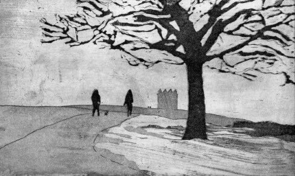

biography

Hello my name is Neil and I am a university-trained graphic designer, artist/printmaker from the North-west England, United Kingdom.
I studied Graphic Design at Stockport College, Bolton Institute (Now the University of Bolton) and also Packaging Graphic Design at Somerset College of Arts & Technology, Taunton. I have always had an interest in arts and crafts since my early experiences at primary school.
The inspiration for my art comes from architecture, landscapes and seascapes. I like the works of famous artists such as Monet, Hockney, JW Turner and Katsushika Hokusia.
Some years after graduation from university with a degree in graphic design, I developed a renewed interest in printmaking which I had first learnt at Stockport College. Whilst visiting my local art gallery, I picked up a leaflet advertising printmaking workshops in Waterfoot, Lancashire which reignited my interest.
I mainly work with intaglio printing techniques such as etching aquatint and dry point and also relief techniques such as reduction linocut. I love experimenting using different types of printing techniques such as Gelli-matt medium printing, Mezzotint and Cyanotypes. I have my own portable etching press and have built a relief printing jig to hand print multicoloured layered prints. Another printing technique I have recently started using is screen-printing. I have my own screen-printing kit which I use to create abstract prints such as my entry for the 20:20 Hot Bed Press International printmaking exchange.

I also like to paint in acrylics and watercolour. I have in the past painted in oils which I first tried out whilst at school. My paintings tend to be mostly landscapes and seascapes of places I have travelled too abroad. I also like to sketch and illustrate using fine liner and watercolour.
Recently, I have taken up iPad art. I have dabbled with digital art in the past mainly using Photoshop and free paint programs you get on PCs. I like to stretch the limits of these applications to see what I can get out of them.
My website includes a selection of my printmaking, paintings, digital art and sketches. I have recently setup an online shop via Redbubble, where you can purchase a selection of high-quality reproductions of my artwork as framed prints and gifts. I am currently a member of Stockport Art Guild and the SAA where you can also see some of my art on my member pages.
I like partaking in photo-walks especially around local sites of interest. Please visit my blog 'Stockport In Print' which is a printmaking project exploring and capturing the varied architectural landmarks and surrounding locations of my home town Stockport.
If you have a Facebook or WordPress account, you can view or subscribe to my latest posts. I also have an Instagram account which is all about printmaking project.
Over the last few decades, I have exhibited and sold my printmaking and paintings both locally, nationally and internationally at open exhibitions such as the Manchester Open and Macclesfield Open to arts and craft fairs in Manchester such as the Boo Christmas Arts and Crafts Fair and also the Manchester Print Fair.
You can contact me here
Thanks for visiting.